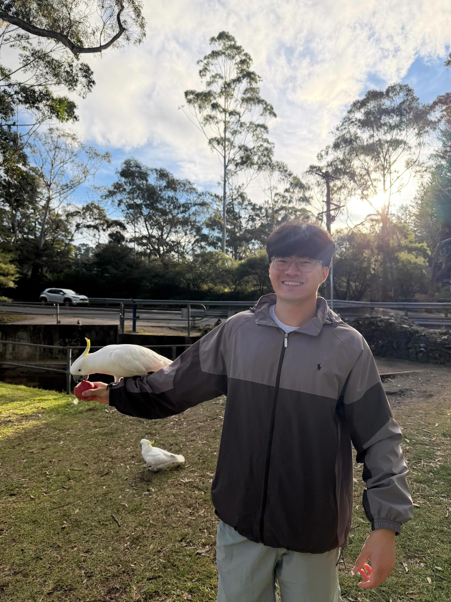

About
I am a freshman at the University of California, Berkeley, studying Applied Mathematics and intending to double major in Computer Science. My interests include optimization, machine learning, and quantitative finance.
I work on conic quadratic optimization in Rust, mentored by Matteo Santamaria at UC Berkeley. Previously, I worked on machine learning and distributed systems, including a research internship at UC Santa Cruz. I also write problems for the Berkeley Math Tournament.
Outside academics, I enjoy golf, film, poker, reading, prediction markets, and writing poetry.

Technical interests
I work with Python, C++, Rust, Haskell, R, and TensorFlow/Keras. My interests also include statistical modeling, game theory, and market making.
Earlier interests
Before Berkeley, I led programming clubs at Korea International School and tutored math and science through Schoolhouse.world. I also edited student journalism and attended the Iowa Young Writers’ Studio.